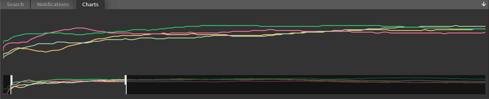
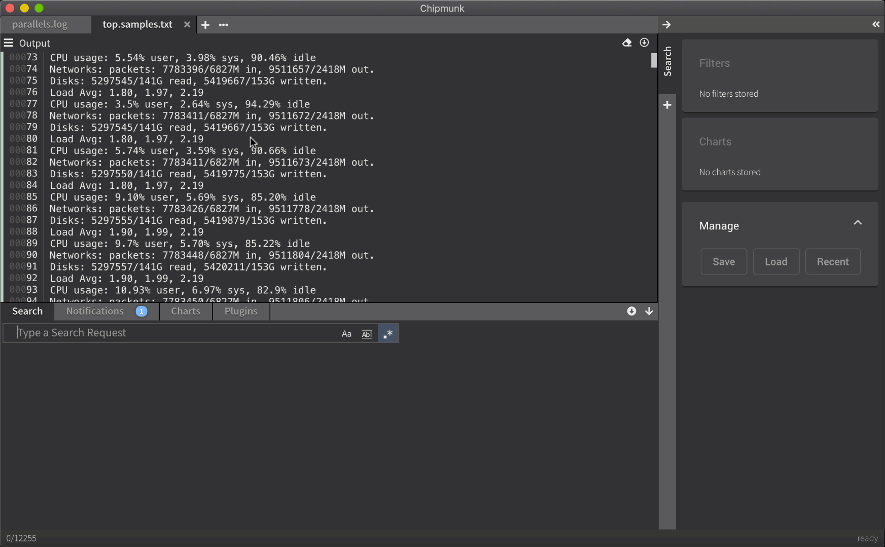
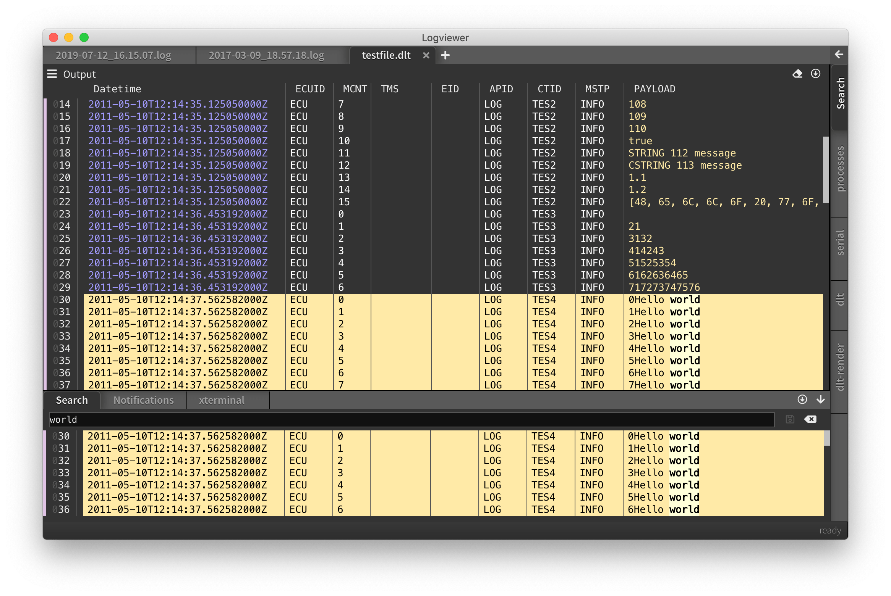
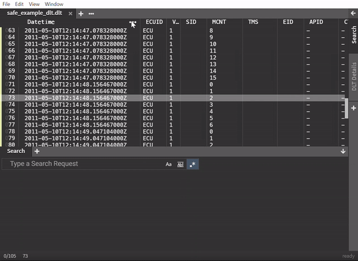

User Guide
This guide describes the most common usecases for using chipmunk.
Searching and Filtering

Searching through huge logfiles
Concatenating logfiles

chipmunk can combine multiple log file. This is useful for example
when you just want to reassamble a logfile that were stored in parts.
merging
Merging is useful if you have several log files e.g. from different devices/processors and you want combine them by merging according to their timestamps.
Charts

To better understand what's going on in a large logfile, it can be helpful to visualize data over
time. chipmunk let's you define regular expressions that match a number and to use this expression
to capture a value throughout a logfile.
Bookmarks

Add bookmarks to mark and remember important log entries. Jump between bookmarks with shortcuts (j and k).
DLT - Diagnostic Log and Trace

View and search and filter DLT files. rogramming in Rust!
Searching with Filters
Of course multiple searches are supported and filters can be saved and restored.

Bookmarks
Bookmarks can be used to pin down log entries that are important to the user.

Lines that are bookmarked will stick in the result view.
Charts
Getting a quick overview of what happened during a 24h-trace period can be daunting if the logfiles are huge (millions of log entries). A very neat way to get a quick overview is to show some graphs for what is happening.

In this graph we captured processor workload for different cores. Any numerical value can be captured by using a regular expression with a group.
Supported are
- integers
- floats
An example for a regular expression with such a capture group looks like this:
measured:\s(\d+)
This will match measured: 42 and pull out the value 42.
Here is an example of how this looks in action.

Assembling files
There is handy support for combining multiple files into one view. You simple drag & drop the files you need into a fresh tab. Then select the concatenate option.
Now you will have the chance to quickly check for a search expression to see if it is present in the dropped files. Here you can potentially include of exclude files.
Merging
this is how merging works:

To help developers to deal with multiple logfiles, chipmunk can automatically detect timestamps and merge logs from multiple files.

DLT support
The Diagnostic Log and Trace AUTOSAR format is widely used in the automotive industry and is a binary log format. chipmunk can understand and process DLT content in large quantities.

Import file
When opening a dlt file, you are prompted with this dialog. Here you can also provide the path to a FIBEX file that contains descriptions for you non-verbose messages.

This can be expanded so can select what components or loglevels you want to include. Note that you are presented with a statistics of how many log messages exist e.g. for a component with a certain log level.

The columns can be configured by right-clicking in one of the column titles. Then you can filter out columns and adjust colors.

Keyboard Shortcuts
Important to most developers: a good and intuitive set of keyboard shortcuts.

Just hit ? and you should get the overview documentation.
Extending chipmunk with plugins
In this section, we'll cover how to extend chipmunk with custom plugins.
Some basics
Developing for chipmunk
create indexer operation with neon binding
Rust: implement streaming API
Since most operations triggered in chipmunk can take some time (mostly working on big files or streams), all functions should use events/messages to inform the chipmunk about progress, results, errors and warnings. Below is a description of how to achieve that.
your function should take 2 additional parameters:
#![allow(unused_variables)] fn main() { update_channel: mpsc::Sender<IndexingResults<T>>, shutdown_rx: Option<mpsc::Receiver<()>>, }
both are rust mpsc channels that can be used for communication between the client using your
function and the function itself. the update_channel is the sender-end of a mpsc channel which
means that your function can use it to send messages to the function-user.
So what should/can your function send? There are 2 basic categories of events you should send:
IndexingProgress<T> messages or Notification messages. We use the Result type to make the
distinction. Kind of like the Either type in haskell. Either we send an Ok(event) or an
Err(notification).
#![allow(unused_variables)] fn main() { pub type IndexingResults<T> = std::result::Result<IndexingProgress<T>, Notification>; }
In case of an IndexingProgress, you can either send an actual result (GotItem), or report on the
lifecycle state of the function (indicating progress or the end of the function)
#![allow(unused_variables)] fn main() { pub enum IndexingProgress<T> { GotItem { item: T }, Progress { ticks: (usize, usize) }, Stopped, Finished, } }
Note that for indicating that the function is finished, there are 2 events (Stopped and
Finished) This is to distinguish between "we were stopped from outside" and "we really did
finish").
For all errors that occure and should be communicated to chipmunk, you can send a Notification.
This is a struct that contains the severity, some content and optionally a line number to indicate
at which line the error has occurred.
#![allow(unused_variables)] fn main() { pub struct Notification { pub severity: Severity, pub content: String, pub line: Option<usize>, } }